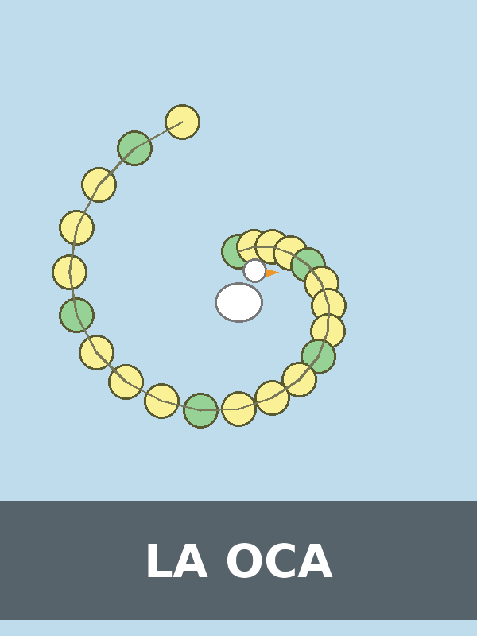
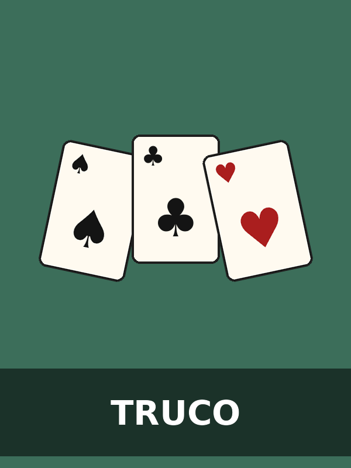

Bienvenidos y bienvenidas
Este sitio reúne reseñas de juegos de mesa organizadas en tres categorías: estrategia, familiares y de cartas. Elegí una categoría para leer la reseña de cada juego, ver su portada y descargar el reglamento en PDF.

Estrategia
Juegos de planificación y toma de decisiones.

Familiar
Ideales para jugar en grupo, de todas las edades.

Cartas
Juegos rápidos con mazos de cartas.